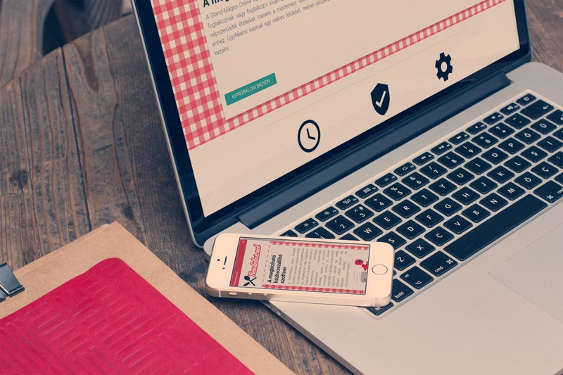

Rendeles.net
About the project
Rendeles.net is a Hungarian sales website. The product offers an e-commerce solution for restaurants that want to expand their services with home delivery. The aim of the website is to encourage people to subscribe with their email addresses in order to try the free version of the software.
Challenges
The client wanted a scalable, clean & friendly website that works perfectly on any device. Thus I have decided to build the project on WordPress. I was using WP material theme, which based on Bootstrap. The client was too busy, and it was only a side-project for them, therefore I had to write the entire content of the website as well. The hardest part of the project was to figure out how to funnel the visitors to subscribe. I have integrated google analytics on the website, therefore I could always follow what happens on the website and make the consequences of the visitors’ behaviour, then make the necessary changes on the site.